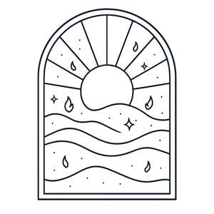

Trade Mark Journal No.2026/009 27 February 2026
UK00004338105 9 February 2026 (3,4)

- Class 3
- Incense; Incense cones; Incense sachets; Incense sticks; Massage candles for cosmetic purposes; Fragrance emitting wicks for room fragrance; Incense spray; Reed diffusers; Air fragrance reed diffusers; Scented water for fragrancing; Potpourri sachets for incorporating in aromatherapy pillows; Scented room sprays; Scented oils; Shower oils; Aromatic oils for the bath; Scented fabric refresher sprays; Scented body spray; Ethereal oils for fragrancing; Essential oils for fragrancing; Fragrance sachets for eye pillows; Essences for fragrancing; Gel sprays being styling aids; Scented fabric refresher spray; Fragrance sachets; Aromatherapy pillows comprising potpourri in fabric containers; Fragrance refills for non-electric room fragrance dispensers; Room perfumes in spray form; Bath oils; Scented linen sprays; Room perfume sprays; Room scenting sprays; Body spray; Room fragrances; Hair spray; Window cleaners in spray form; Foot deodorant spray; Body oil spray; Spray polish; Room fragrancing products; Cleaning sprays; Refills for electric room fragrance dispensers; Room fragrancing preparations; Spray cleaners for household use; Spray cleaners for freshening athletic mouth guards; Shower and bath foam; Bath and shower foam; Skin cleaning and freshening sprays; Hair styling spray; Spray cleaners for use on textiles; Breath freshening sprays; Sprays (Breath freshening -); Makeup setting sprays; Body sprays; Shower and bath gel; Bath and shower gel; Shaving sprays; Cosmetics; Skincare cosmetics; Moisturisers [cosmetics]; Cosmetics and cosmetic preparations; Hair cosmetics; Skin fresheners [cosmetics]; Cosmetics for eye-lashes; Anti-aging moisturizers used as cosmetics; Cosmetics for suntanning; Organic cosmetics; Non-medicated cosmetics; Lip cosmetics; Nail cosmetics; Skin moisturizers used as cosmetics; Natural cosmetics; Mousses [cosmetics]; Cosmetics preparations; Make-up palettes containing cosmetics; Tanning oils [cosmetics]; Tanning gels [cosmetics]; Cosmetics in the form of lotions; Colour cosmetics; Self-tanning preparations [cosmetics]; Facial creams [cosmetics]; Beauty care cosmetics; Suncare lotions [for cosmetic use]; Cosmetics for animals; Tanning preparations [cosmetics]; Decorative cosmetics; Eyebrow cosmetics; Multifunctional cosmetics; Milks [cosmetics]; Eye cosmetics; Body creams [cosmetics]; After-sun oils [cosmetics]; Skin masks [cosmetics]; Cosmetics for eye-brows; Tanning milks [cosmetics]; Functional cosmetics; Facial gels [cosmetics]; Suntan oils [cosmetics]; Skin care cosmetics; Fluid creams [cosmetics]; Cosmetics for children; Suntan lotion [cosmetics]; Non-medicated cosmetics and toiletry preparations; Humectant preparations [cosmetics]; Emollient preparations [cosmetics]; Cosmetics in the form of creams; Powder compacts [cosmetics]; Sun-tanning preparations [cosmetics]; Cosmetic hair lotions; Suntanning oil [cosmetics]; Colour cosmetics for the skin; After-sun milks [cosmetics]; After-sun milk [cosmetics]; Cosmetics for use on the skin; Cosmetic moisturisers; Sunscreens [for cosmetic use]; Cosmetic creams and lotions; Bath powder [cosmetics]; Night creams [cosmetics]; Skin recovery creams [cosmetics]; Sun blocking lipsticks [cosmetics]; Body gels [cosmetics]; Cosmetics for the use on the hair; Body and facial creams [cosmetics]; Cosmetic products in the form of aerosols for skincare; Lip stains [cosmetics]; Sunscreen [for cosmetic use]; Sunscreen creams [for cosmetic use]; Body care cosmetics; Cosmetic soaps; Creams (Cosmetic -); Cosmetic creams; Cosmetics containing keratin; Cosmetic skin fresheners; Hair care lotions [for cosmetic use]; Cosmetics in the form of powders; Dyes (Cosmetic -); Cosmetic dyes; Cosmetics containing panthenol; After-sun lotions [for cosmetic use]; Beauty lotions; Cosmetics in the form of oils; Cosmetic facial lotions; Facial lotions [cosmetic]; Cosmetic suntan lotions; Nail paint [cosmetics]; Perfume oils for the manufacture of cosmetic preparations; Skin care lotions [cosmetic]; Colour cosmetics for children; Tissues impregnated with cosmetics; Nail hardeners [cosmetics]; Anti-aging creams [for cosmetic use]; Sun protecting creams [cosmetics]; Nail tips [cosmetics]; Cosmetic products for the shower; Anti-ageing creams [for cosmetic use]; Nail primer [cosmetics]; Smoothing emulsions [cosmetics]; Skin cleansers [cosmetic]; Perfumed powders [for cosmetic use]; Liners [cosmetics] for the eyes; Moisturising skin lotions [cosmetic]; Cosmetic creams for the skin; Skin creams [cosmetic]; Skin creams [for cosmetic use]; Body and facial gels [cosmetics]; Scented wax melts; Scented wood; Wax (Depilatory -); Depilatory wax; Scented soaps; Hair wax; Scented sachets; Wax melts [fragrancing preparations]; Scented pine cones; Shoe wax; Scented body lotions; Moustache wax; Wax (Moustache -); Scented water; Scented body creams; Laundry wax; Wax (Laundry -); Mustache wax; Perfumed soap; Polishing wax; Wax (Polishing -); Scented ceramic stones; Scented body lotions and creams; Scented oils used to produce aromas when heated; Scented bathing salts; Carnauba wax for automotive use; Perfumed soaps; Scented linen water; Car wax; Floor wax; Perfumed creams; Perfumed potpourris; Depilatory waxes; Perfumed powder; Automobile wax; Scented toilet waters; Cushions impregnated with perfumed substances; Cobblers' wax; Wax (Cobblers' -); Moist paper hand towels impregnated with a cosmetic lotion; Prepared wax for polishing; Floor wax remover; Wax treatments for the hair; Perfumed sachets; Wax for floors (Non-slipping -); Non-slipping wax for floors; Floors (Non-slipping wax for -); Perfumed powders; Boot wax; Floor wax removers; Perfumed lotions [toilet preparations]; Moist wipes impregnated with a cosmetic lotion; Massage waxes; Perfume oils; Shoemakers' wax; Eyebrow styling wax; Epilating waxes.
- Class 4
- Candles; Candles and wicks for candles for lighting; Tealight candles; Votive candles; Scented candles; Wicks for candles; Candles for use as nightlights; Nightlights [candles]; Candles for lighting; Fragranced candles; Wicks for candles for lighting; Candles and wicks for lighting; Tallow candles; Candles in tins; Candle torches; Perfumed candles; Candles (Perfumed -); Soy candles; Christmas lights [candles]; Candles for use in the decoration of cakes; Table candles; Tea light candles; Church candles; Fruit candles; Floating candles; Aromatherapy fragrance candles; Beeswax for use in the manufacture of candles; Candles for night lights; Wax for making candles; Candle wax; Musk scented candles; Tealights; Grave candles, non-electric; Christmas tree decorations for illumination [candles]; Bougies in the nature of wax candles; Candles (Christmas tree -); Christmas tree candles; Christmas tree ornaments for illumination [candles]; Candles for absorbing smoke; Candle assemblies; Wicks for lighting; Special occasion candles; Wicks for oil lamps; Wax lights; Lamp wicks; Wicks (Lamp -); Wax for lighting; Tea lights; Candles containing insect repellent; Tapers for lighting; Illuminating wax; Beeswax; Wax for use in manufacture; Wax for skis; Wax for surfboards; Wax for skateboards; Industrial wax; Wax for snowboards; Belting wax; Beeswax for use in the manufacture of ointments.
Midnight Embers Ltd